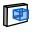

L'atelier Architecture (ou « Arch » pour faire court) fournit un flux de travail de type BIM à FreeCAD, avec des fonctionnalités telles le support du format IFC, des entités architecturales pleinement paramétriques comme les murs, éléments structurels ou fenêtres, et la production d'une documentation 2D complète. Le module Arch dispose également de tous les outils de l'atelier Draft.
Note: La fonctionnalité BIM de FreeCAD est maintenant progressivement divisée en Arch Workbench, qui contient tous les outils BIM de base, et le BIM Workbench addon, que vous pouvez installer via le menu Outils → Addon Manager, qui ajoute une nouvelle couche d'interface au-dessus des outils Arch, dans le but de rendre le flux de travail de BIM dans FreeCAD plus convivial et intuitif.

Contents
Outils
Ces outils permettent la création d'objets architecturaux.
-
 Mur : Crée un mur à partir de zéro ou à partir d'un objet sélectionné.
Mur : Crée un mur à partir de zéro ou à partir d'un objet sélectionné. -
 Élément structurel : Crée un élément structurel à partir de zéro ou à partir d'un objet sélectionné.
Élément structurel : Crée un élément structurel à partir de zéro ou à partir d'un objet sélectionné.
- Outils barres de renfort (armature)
-
 Armature droite: Crée une barre de renfort rectiligne dans un élément structurel sélectionné
Armature droite: Crée une barre de renfort rectiligne dans un élément structurel sélectionné -
 Armature en U: Crée une barre de renfort en U dans un élément structurel sélectionné
Armature en U: Crée une barre de renfort en U dans un élément structurel sélectionné -
 Armature en L: Crée une barre de renfort en L dans l'élément de structurel sélectionné
Armature en L: Crée une barre de renfort en L dans l'élément de structurel sélectionné -
 Armature cintrée: Crée une barre de renfort en Z dans l'élément structurel sélectionné
Armature cintrée: Crée une barre de renfort en Z dans l'élément structurel sélectionné -
 Armature en étrier: Crée une barre de renfort en forme d'étrier dans l'élément structurel sélectionné
Armature en étrier: Crée une barre de renfort en forme d'étrier dans l'élément structurel sélectionné -
 Armature hélicoïdale: Crée une barre de renfort hélicoïdale dans l'élément structurel sélectionné
Armature hélicoïdale: Crée une barre de renfort hélicoïdale dans l'élément structurel sélectionné -
 Armature personnalisée: Crée une barre de renfort personnalisée dans un élément structurel sélectionné à l'aide d'une esquisse.
Armature personnalisée: Crée une barre de renfort personnalisée dans un élément structurel sélectionné à l'aide d'une esquisse.
-
-
 Étage : Crée un étage incluant les objets sélectionnés.
Étage : Crée un étage incluant les objets sélectionnés. -
 Bâtiment : Crée un bâtiment incluant les objets sélectionnés.
Bâtiment : Crée un bâtiment incluant les objets sélectionnés. -
 Site : Crée un site incluant les objets sélectionnés.
Site : Crée un site incluant les objets sélectionnés. -
 Fenêtre : Crée une fenêtre à partir d'un objet sélectionné.
Fenêtre : Crée une fenêtre à partir d'un objet sélectionné. -
 Plan de coupe : Ajoute un plan de coupe au document.
Plan de coupe : Ajoute un plan de coupe au document.
- Outils axes
-
 Axes: Ajoute un (des) Axe(s) dans le document.
Axes: Ajoute un (des) Axe(s) dans le document. -
 Système d'Axes: Ajoute un système d'axes composé de plusieurs axes au document
Système d'Axes: Ajoute un système d'axes composé de plusieurs axes au document - Grid: Ajoute un objet de type grille dans le document
-
{kind=link}
-
 Toiture: Crée un toit en pente à partir d'une face sélectionnée.
Toiture: Crée un toit en pente à partir d'une face sélectionnée. -
 Espace: Crée un objet volume dans le document.
Espace: Crée un objet volume dans le document. - Escaliers: Crée un objet escalier dans le document.
{kind=link}
- Outils panneaux
- Panneau: Crée un objet panneau à partir de zéro ou d'un objet 2D sélectionné.
-
 Découpe de panneau: crée, dans le document 3D, une vue 2D plane pour le découpage d'un panneau Disponible dans la version 0.17
Découpe de panneau: crée, dans le document 3D, une vue 2D plane pour le découpage d'un panneau Disponible dans la version 0.17
{kind=link}
-
 Panel Sheet: Crée une feuille de coupe 2D comprenant des découpes de panneaux ou d'autres objets 2D Disponible dans la version 0.17
Panel Sheet: Crée une feuille de coupe 2D comprenant des découpes de panneaux ou d'autres objets 2D Disponible dans la version 0.17
-
-
 Économiseur: Permet d'optimiser l'imbrication de plusieurs objets plats à l'intérieur d'un conteneur défini en vue d'une découpe Disponible dans la version 0.17
Économiseur: Permet d'optimiser l'imbrication de plusieurs objets plats à l'intérieur d'un conteneur défini en vue d'une découpe Disponible dans la version 0.17
-
-
 Ossature: Crée une ossature à partir d'un objet 2D plan et d'un profil.
Ossature: Crée une ossature à partir d'un objet 2D plan et d'un profil. -
 Équipement: Crée un objet équipement à partir d'un objet sélectionné.
Équipement: Crée un objet équipement à partir d'un objet sélectionné.
- Outis tubes Disponible dans la version 0.17
-
 Tuyaux: Crée un tube. Disponible dans la version 0.17
Tuyaux: Crée un tube. Disponible dans la version 0.17
-
-
 Connecteur de Tuyaux: Crée un onglet ou une connexion en Té entre deux ou trois tubes sélectionnés.
Connecteur de Tuyaux: Crée un onglet ou une connexion en Té entre deux ou trois tubes sélectionnés.
-
- Outils matériaux
- Matériau: Crée ou modifie l'attribut matériau de l'objet sélectionné.
-
 Multi-Matériaux: Crée un objet multi-matériaux (couches) et l'attribue aux objets sélectionnés, le cas échéant Disponible dans la version 0.17
Multi-Matériaux: Crée un objet multi-matériaux (couches) et l'attribue aux objets sélectionnés, le cas échéant Disponible dans la version 0.17
{kind=link}
-
 Feuille de calcul: Permet de collecter dans une feuille de calcul toutes sortes de données.
Feuille de calcul: Permet de collecter dans une feuille de calcul toutes sortes de données.
Outils de transformation
Ce sont des outils de modification d'objets architecturaux.
-
 Coupe Plane: Coupe un objet selon un plan défini.
Coupe Plane: Coupe un objet selon un plan défini. -
 Add: Ajouter un objet à un composant.
Add: Ajouter un objet à un composant. -
 Remove: Soustraire ou effacer un ou des objets d'un composant.
Remove: Soustraire ou effacer un ou des objets d'un composant. -
 Survey: Permet de prendre rapidement des mesures et des informations sur un modèle.
Survey: Permet de prendre rapidement des mesures et des informations sur un modèle.
Utilitaires
Ce sont des outils supplémentaires, pour vous aider dans des tâches spécifiques.
-
 Composant: Crée un composant Arch non paramétrique.
Composant: Crée un composant Arch non paramétrique. -
 Clone: Crée un clone d'un composant Arch
Clone: Crée un clone d'un composant Arch -
 Fractionner un maillage: Fractionne un maillage sélectionné en composants distincts.
Fractionner un maillage: Fractionne un maillage sélectionné en composants distincts. -
 Mesh To Shape: Convertit un maillage en une forme, unifiant des faces coplanaires.
Mesh To Shape: Convertit un maillage en une forme, unifiant des faces coplanaires. -
 Sélectionner maillages non solides: Sélectionne tous les maillages non solides dans la sélection en cours ou le document.
Sélectionner maillages non solides: Sélectionne tous les maillages non solides dans la sélection en cours ou le document. -
 Supprimer la forme: Tente de transformer un objet arch basé sur une forme cubique en objet entièrement paramétrique.
Supprimer la forme: Tente de transformer un objet arch basé sur une forme cubique en objet entièrement paramétrique. -
 Fermer les trous: Ferme les trous dans une forme sélectionnée.
Fermer les trous: Ferme les trous dans une forme sélectionnée. -
 Fusionner des murs: Fusionne deux ou plusieurs murs.
Fusionner des murs: Fusionne deux ou plusieurs murs. -
 Vérifier: Vérifie si les objets sélectionnés sont des solides et ne contiennent pas de défauts.
Vérifier: Vérifie si les objets sélectionnés sont des solides et ne contiennent pas de défauts. -
 Explorateur Ifc: Explore le contenu d'un fichier IFC.
Explorateur Ifc: Explore le contenu d'un fichier IFC. -
 Basculer en IFC Brep: Force l'exportation de l'objet sélectionné en un IfcFacetedBrep.
Basculer en IFC Brep: Force l'exportation de l'objet sélectionné en un IfcFacetedBrep. -
 3 Vues d'un maillage: Crée les vues de dessus, de face et latérale à partir d'un maillage.
3 Vues d'un maillage: Crée les vues de dessus, de face et latérale à partir d'un maillage. - Créer une feuille de données IFC ...:
-  Afficher/Cacher les sous composants: Affiche ou cache les sous composants d'un objet Arch.
{kind=link}
Préférences
-
 Préférences...: Préférences disponibles dans Arch Module.
Préférences...: Préférences disponibles dans Arch Module.
Formats de fichiers
- IFC : Industry Foundation Classes
- DAE : Format de maillage Collada
- OBJ : Format mesh (seulement exportation)
- JSON : JavaScript Object Notation format (seulement exportation)
- 3DS : 3DS format (seulement importation)
API
L'atelier Arch peut être utilisé dans des scripts python et dans des macros grâce aux fonctions Arch Python API.
Tutoriels
- Tutoriel Arch
- Tutoriel Arch sur le blog de Yorik
- Importation de fichiers STL ou OBJ
- Exportation de fichiers STL ou OBJ
- Tutoriel panneaux Arch
- Chapitre sur la modélisation BIM dans le Guide de l'Utilisateur FreeCAD